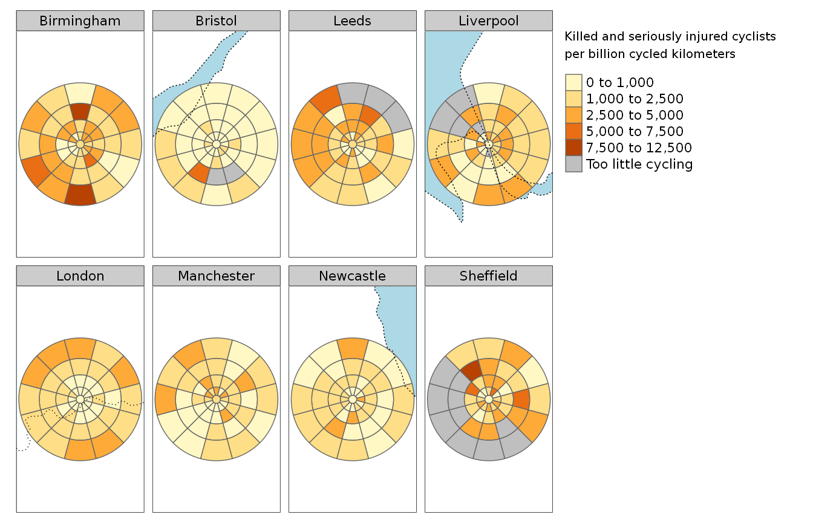

Zoning systems have long been a topic of geographic research and political controversy. For even longer they have been used in a variety of applications, ranging from … to ‘tithe maps’ depicting the land ownership and use in 19th Century England (Bryant and Noke 2007)
From a research perspective, the way in which
Openshaw (1977)
Statistics, policy making and transport planning are often based on administrative regions. However, there are a couple of downsides to using administrative regions. First of all, since a city and its politics change over time, the administrative regions often change accordingly. This make it harder to do time series analysis. Since the administrative regions have heterogeneous characteristics, for instance population size, area size, proximity to the city centre, comparing different administrative regions within a city is not straightforward. Moreover, comparing administrative regions across cities is even more challenging since average scale of an administrative region may vary a lot across cities.
Grid tiles are popular in spatial statistics for a number of reasons. Most importantly the tiles have a constant area size, which makes comparibily possible. Moreover, the grid tiles will not change over time like administrative regions. However, one downside is that a grid requires a coordinate reference system (CRS), enforcing (approximately) equal area size. For continents or large countries, a CRS is always a compromis. Therefore, the areas of the tiles may vary, or the shape of the tiles may be sheared or warped.
Another downside from a statistical point of view is that population densities are not uniform within a urban area, but concentrated around a centre. As a consequence, high resolution statistics is preferable in the dense areas, i.e. the centre, and lower resolution statitics in other parts of the city. That is the reason why administrative regions are often smaller in dense areas.
Pros:
Cons:
The
The radius of each annuli in the zoning system can be incremented by a fixed amount, as shown in previous figures. In cases where high geographic resolution is important near the centre of the study region, such as when designing transport systems into the central zone of a city planning, increasing distances between each radius may be desirable. We experimented with various ways of incrementing the annuli width and suggest linear increases in width as a sensible default for a simple zoning system. This linear growth leads to distances between each annuli boundary increasing in line with the steps in the triangular number sequence.

Bryant, Victoria, and Maggi Noke. 2007. “The Worcestershire Tithe and Enclosure Map Project: Creating a Research Resource.” Landscape History 29 (1): 89–92. https://doi.org/10.1080/01433768.2007.10594591.
Openshaw, S. 1977. “Optimal Zoning Systems for Spatial Interaction Models.” Environment and Planning A 9 (2): 169–84. https://doi.org/10.1068/a090169.